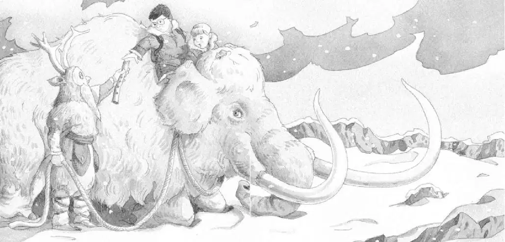

巫师没有说话。他透过猫头鹰面具往外看。
“求求你，救我们出去吧。”安妮说。
巫师把一根绳子扔进洞里，杰克一把抓住。
“他想把我们拉上去。”安妮说。
杰克抬头往上看，巫师不见了。
“他去哪儿了？”杰克疑惑地问。
“快拉绳子。”安妮提议道。
杰克拉了拉，绳子绷紧了，开始往上升。
“我先来！”安妮高兴地说。
“安妮，这可不是在做游戏。”杰克提醒道。
“别担心，我会当心的。”安妮说。
杰克把绳子交给安妮。“好吧，千万要抓牢了。”他叮嘱道。
安妮用两只手抓住绳子。她双脚蹬了一下洞壁，和绳子一起悬空升了上去。
她用脚一点儿一点儿轻轻蹬着洞壁——终于升到了洞口。
巫师又出现了，杰克看见他把安妮扶了上去。接着他们俩都消失了。
杰克感到很纳闷。巫师刚才是用两只手来扶安妮的。那么，是谁在抓着绳子的另一头呢？
“哇！”外面传来了安妮的声音。
发生了什么事？杰克完全被蒙在了鼓里。
那个巫师又回来了，再次把绳子扔了下来。
杰克一把抓住绳子。绳子开始往上升。
杰克把绳子抓得紧紧的。他的两只脚悬空了。他感到双手火辣辣地疼，手臂好像要被拽脱臼了似的。
但他还是牢牢抓着绳子不松手，双脚一下下地蹬在洞壁上。
到了洞口，巫师把杰克拉到了白雪皑皑的地面上。
“谢谢。”杰克说着站起身来。
巫师个子很高，穿着一件长长的毛皮袍子。透过猫头鹰面具，杰克可以看见他的眼睛。
“喂！”安妮喊道。
杰克转过身。
安妮竟然坐在一头猛犸象上。
“吱吱。”小老鼠蹲在猛犸象的脑袋上。
那头猛犸象就是一头巨型大象，长着一身杂乱粗硬的红毛和两根弯弯的长牙。
那根绳子的一端就绕在猛犸象粗壮的脖子上。
“是露露把我们拉上来的。”安妮说。
“露露？”杰克不解地问。
“你不觉得露露这个名字很适合它吗？”安妮说。
“亏你想得出来！”杰克说。他迈步朝猛犸象走去。
“对了，‘猛犸象’（Mammoth）这个词是以字母M开头的，”安妮说，“说不定露露就是我们要找的那样东西！”
“我认为不是。”杰克说。
突然，庞然巨兽猛犸象跪了下来，就像马戏团里的一头大象。
“哎呀！”安妮惊叫道。她抓住猛犸象的耳朵，不让自己滑下去。
巫师扶着杰克爬到了猛犸象的背上。
“谢谢。”杰克说。
然后，巫师把手伸进一个小袋子，掏出一根光滑的白骨头，递给了杰克。
骨头中间是空的，一侧有四个孔，另一侧有两个孔。
“哦，天哪，我想这就是他的笛子。”杰克说，“我在那本书里看到过，这笛子是用猛犸象的骨头做的。”
杰克把笛子还给巫师。
“真漂亮。”杰克很有礼貌地说。
可是巫师举起了一只手。
“他要你留着这根猛犸象骨头。”安妮解释道。
“猛犸象骨头，”杰克喃喃地说，“嘿，也许这就是第三样东西。”
杰克看着巫师，问：“你认识仙女摩根吗？”
巫师没有回答，但他的眼睛闪烁着慈祥的光。
巫师转过身，解开猛犸象身上的绳子。然后，他在这头毛乎乎的庞然大物耳边低语了几句。
猛犸象站起来时，杰克紧紧地抓住安妮的大衣，以免自己摔下去。他感觉离地面非常非常远。
杰克贴着安妮的身体，坐在猛犸象的脑袋和拱起的后背之间，那里有一个凹陷的地方。

猛犸象迈着缓慢而沉重的步子，踏着积雪往前走，然后逐渐加快了速度。
他们随着猛犸象的步伐上下颠簸。杰克问：“我们这是要去哪儿？”
“去树屋呀！”安妮回答。
“它怎么知道树屋在哪儿？”杰克不解地问。
“它就是知道。”安妮说。
杰克扭头往后看。
巫师正站在白茫茫的积雪中，注视着他们。
然而就在这时，乌云散开了，太阳露了出来。
阳光映在雪地上，刺得杰克睁不开眼。
当他眯起眼睛细看时——巫师已经消失了。